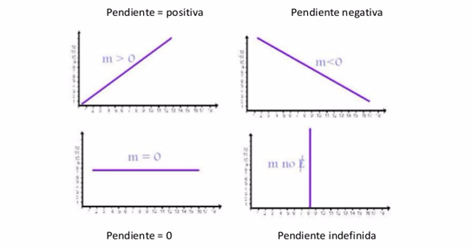
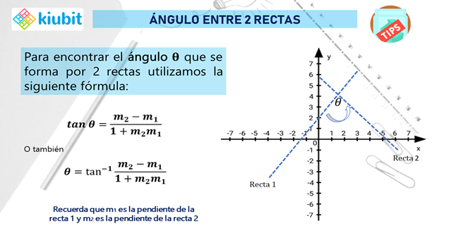
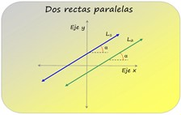
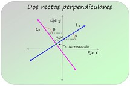

Se llama ángulo de inclinación de una recta el formando por la parte positiva del eje x y la recta cuando esta se considera dirigida hacia arriba.
Pendiente de una recta (m)
Se llama pendiente o coeficiente angular de una recta a la tangente de su ángulo de inclinación.

Nota: La pendiente de una recta es positiva cuando genera un ángulo agudo, es decir, cuando la recta se eleva de izquierda a derecha y con la pendiente de una recta cuando genera un ángulo obtuso es decir cuando la recta se eleva de derecha a izquierda.
- Tipos de pendiente

- Ángulo de inclinación

El ángulo formado por dos rectas que se forman entre si es igual a la pendiente final menos la pendiente inicial todo sobre 1 más el producto de sus pendientes.
Nota: El ángulo formado por dos rectas que se intercepten entre si debe tomárselo.
Rectas paralelas y perpendiculares

Las rectas paralelas son rectas que nunca se cruzan y forman el mismo ángulo cuando se cruzan con otra recta. Las líneas perpendiculares se cruzan en un ángulo de 90 grados, formando un ángulo recto.
Una recta se puede expresar en forma matemática mediante la ecuación:
y = mx + b
Donde b es el corte de la recta con el eje vertical y m es la pendiente, relacionada con el ángulo α que forma la recta con la horizontal mediante:
m = tg α
Ejemplo:
Sean las rectas:
La pendiente de la recta y = 2x-3 es m1 = 2.
Podemos reescribir la segunda recta:
De este modo, vemos mejor que la pendiente es m2 = -1/2.
Las rectas son perpendiculares porque m2 = – 1 / m1 .
Representación: